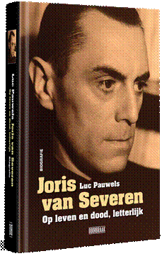
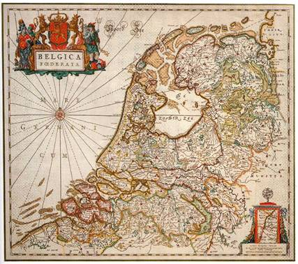

> nieuwsbrief > 25e jaargang, nr. 1/2021
Inhoud
Het Studiecentrum Joris van Severen
Secretariaat: Paddevijverstraat 2, 8900 Ieper, Tel. 057-204 194
Bankrelatie: IBAN BE71 0001
7058 1469 – BIC BPOTBEB1 t.n.v.
Studiecentrum Joris van
Severen, Paddevijverstraat 2, B 8900 Ieper
https://www.facebook.com/studiecentrumjorisvanseveren/
http://www.jorisvanseveren.org
Op een nieuw videokanaal hebben we een biografisch
videoportret van Joris van Severen aangemaakt. Zie: https://www.youtube.com/watch?v=pzjzR5orEnA&t
Kaftillustratie:
kaftafbeelding van de nieuwe biografie van Joris van Severen
Hernieuwen ledenbijdrage voor 2021
De jaarwisseling nadert met rasse schreden – en meteen
ook het tijdstip voor het hernieuwen van de bijdragen voor 2021.
Dank zij een zuinig beheer blijft het ons mogelijk om,
niettegenstaande alweer gestegen druk- en portkosten, de
minimumbijdrage te behouden op 29 €. In ruil daarvoor verzekeren
we u de stipte toezending van het nieuwe Jaarboek
Joris van Severen – het 25e al – in de
meimaand en van de vier nummers van ons kwartaalblad Nieuwsbrief
Joris van Severen. Vanaf het bedrag
van 35 € boeken we u met dank als steunend lid. Vereffening
graag via onze rekening IBAN: BE71 0001 7058 1469 – BIC:
BPOTBEB1 t.n.v. Studiecentrum Joris van Severen,
Paddevijverstraat 2, 8900 Ieper. Lees evenwel eerst even
verder de informatie m.b.t. het combinatieaanbod over de nieuwe
biografie van Joris van
Severen.
Namenregister over
de jaarboeken 1 - 25
Naast de uitgave van het 25e Jaarboek
Joris van Severen plannen we voor
2021 ook de uitgave van een uitgebreid Register van alle
persoonsnamen die in de jaarboekenreeks 1 tot en met 25 terug te
vinden zijn. Dit Register zal – zonder
meerkost - als bijlage bij het Jaarboek 25 (2021) aan alle
leden toegestuurd worden. Teneinde zicht te krijgen op de
benodigde oplage raden we iedereen aan z’n ledenbijdrage (zie
hoger) zo vlug mogelijk te vereffenen. Naderhand – eens het
Jaarboek 25 (2021) verschenen is – zullen we voor dit Register een (nog te
bepalen) kostprijs dienen aan te rekenen. Het is dus zaak er
tijdig bij te zijn, m.a.w. de ledenbijdrage zo spoedig als
mogelijk te vereffenen.
Nieuwe biografie van
Joris van Severen
Samen met het Jaarboek
Joris van Severen 25 zal ook de nieuwe
biografie Joris van Severen – op leven en dood, letterlijk verschijnen bij
Uitgeverij Doorbraak, waarvan Luc Pauwels de auteur is (zie
kaftillustratie van deze Nieuwsbrief en verderop in dit nummer).
In de boekhandel zal de prijs 35 € (ex. eventuele verzendkosten)
bedragen.
U kan deze nieuwe
biografie via ons Studiecentrum bestellen in combinatie met het
Jaarboek
Joris van Severen en het Register, aan de ledenprijs
van 57 € voor het totale
pakket. Ook hier geldt evenwel de voorwaarde dat we uw
intekening (en betaling) tijdig kunnen registreren. Dit aanbod
geldt tot uiterlijk 15 april 2021.
Joris van Severen op
Doorbraak
De beide bijdragen over Joris van Severen – van
respectievelijk Vik Eggermont en Luc Pauwels - die te lezen
waren op de Doorbraak-website – en via Google nog steeds na te
slaan zijn – trokken tot nog toe (aanvang december) de aandacht
van 4907 lezers.
Bijdrage Ruud
Bruijns
In de vorige Nieuwsbrief namen we, aansluitend op de
bijdrage van Dieter Vandenbroucke, Joris van Severen. De
verleiding van en fascist, ook een repliek daarop van Ruud
Bruijns op. Deze repliek staat nu ook op de website https://www.belgiumwwii.be/
te lezen, eveneens aansluitend op het stuk van Vandenbroucke.
Een staaltje van fairplay en intellectuele eerlijkheid die te
waarderen valt.
Bezoek graf Gueuning
Normalerwijze zouden we op 7 november 2020 naar
jaarlijkse gewoonte ook dit jaar zijn overlijden op 11 november
1971, te Mainvault herdacht hebben. Ten gevolge van de
stringentere Corona-maatregelen wordt die herdenking gepland
voor maar wel op 5 maart 2021, zijn geboortedag.
Nieuwe biografie van Joris van Severen
Joris van Severen (1894-1940) is een politicus die blijft fascineren. In deze biografie gaat Luc Pauwels dieper in op het leven, het denken, maar ook de liefdesavonturen van Van Severen. Hij brengt de huidige stand van het historisch onderzoek samen in een nieuwe synthese die leest als een roman.
Notariszoon Van Severen leert aan het IJzerfront de sociale werkelijkheid kennen in al zijn rauwheid. Boerenzonen en arbeiderskinderen worden door de in meerderheid Franstalige officieren de dood ingejaagd. Hij sluit zich aan bij de geheime frontbeweging, wordt een overtuigd antimilitarist en juicht de bolsjewistische revolutie in Rusland toe.
In het geteisterde Vlaanderen van na 1918 zoekt Van Severen naar orde en zingeving. Hij wordt Vlaams-nationaal volksvertegenwoordiger voor de Frontpartij. De praktijk van het parlementaire stelsel ontgoochelt hem ten gronde.
Hij sticht het Verbond van Dietse Nationaal Solidaristen (Verdinaso) die als een elitebeweging het volk moet voorgaan. Op weg naar herstel in een Heel-Nederlands staatsverband. Geen geweld, maar overtuigen door het voorbeeld te geven. Later verbreedt hij zijn Heel-Nederlandse visie tot wat we nu Benelux noemen. Zeg maar de Nederlanden zoals vóór 1830.
De partijpolitiek verafschuwt hem, maar binnenskamers spreekt men vaak met respect over hem. Van Severen zit op één lijn met koning Leopold III en wil ons buiten een volgende wereldoorlog houden. Op 10 mei 1940 wordt hij aangehouden door de Belgische Staatsveiligheid. Die draagt hem wederrechtelijk over aan de Franse militaire overheid. Op 20 mei wordt Joris van Severen vermoord. Een tragisch leven in een nieuw licht. Niet te missen. ISBN 978 9492639561.
Luc Pauwels (1940)
is gewezen bedrijfsleider en stichtte het tijdschrift ‘TeKoS’. Hij
studeerde geschiedenis aan de KU Leuven waar hij afstudeerde op de
ideologische evolutie van Joris. Hij is ook de voorzitter van het
Studiecentrum Joris van Severen.
___________________________
U
kunt deze biografie bestellen in combinatie met het Jaarboek
Joris van Severen 25 (2021) en het register over de 25
verschenen Jaarboeken Joris van Severen. Zie de gegevens
daaromtrent op pagina 4 van deze Nieuwsbrief. De
boekhandelsprijs van deze uitgave zal 35 € bedragen.
Luc Pauwels
Wat er
niet allemaal ‘fascistisch’ zou zijn… Van Joris van Severen tot
de coronamaatregelen van de regeringen. In België en in het
buitenland. Je kon het bij een betoging in Berlijn op een
reusachtig spandoek lezen. Was Mussolini in de buurt? Neen,
natuurlijk. Even stilstaan bij het oneigenlijke gebruik van de
term ‘fascist’ als scheldwoord, ‘fascistisch’ als ultieme
diskwalificatie.
Daarvoor
moeten we even terug in de geschiedenis. In 1917 grepen de
communisten de macht in Rusland. Ze wilden in zoveel mogelijk
landen aan het bewind te komen, de wereldrevolutie ontketenen
Alle Europese landen waren erg verzwakt door de Eerste
Wereldoorlog, politiek, sociaaleconomisch, maar vooral
psychologisch. Dus het scheen erin te zitten.
Maar
dan duikt er al in 1921 in Italië de Partito Nazionale
Fascista (PNF) op, geleid door ene Benito Mussolini,
gepokt en gemazeld in de socialistische beweging. In 1922
organiseert die een Mars op Rome. Koning Victor Emmanuel III
benoemt Mussolini tot premier. In 1924 wint de PNF de
parlementsverkiezingen en beschikt ze over een zetelmeerderheid.
Begripsverruiming en
stigmatisering
Intussen
zijn de communisten bijzonder teleurgesteld dat de socialisten
in meerderheid voor de democratie kiezen en hen niet volgen op
het pad van de wereldrevolutie. Stalin schrijft in 1924: ‘Het
fascisme is een op de actieve medewerking van de
sociaaldemocratie steunende strijdorganisatie van de
bourgeoisie. De sociaaldemocratie is objectief de gematigde
vleugel van het fascisme’.1 Vanaf dan begint de
oeverloze uitdeining van de term ‘fascisme’. Socialisten en
sociaaldemocraten worden ‘sociaalfascisten’ gelabeld. Katholieke
politici als ‘klerikaalfascisten’ gestigmatiseerd.
‘Wat
allereerst opvalt, schrijft de gerenommeerde Nederlandse
historicus Hermann von der Dunk (1928-2018), is de voortdurende
verruiming die het begrip heeft ondergaan. (…) De term “fascist”
behoort momenteel nog steeds tot de minst begeerde etiketten,
wat niet wegneemt dat hij kwistiger wordt gebezigd dan ooit. De
begripsverruiming lijkt onbeperkt. De naoorlogse generatie (…)
voelde zich door het neomarxisme veelal gelegitimeerd om het
begrip opnieuw drastisch te verruimen. (…) Zo weekt een geslacht
dat Hitler en Mussolini slechts als interessante exotische
roofdieren uit boeken en verhalen kent, de term los van hun
oorspronkelijke dragers om hem toe te passen op degenen die in
levenden lijve het kwaad lijken te representeren, vandaag’.2
En zo
ontstonden termen als ‘ecofascisme’ en ‘taalfascisme’, om het
hier maar even bij die twee voorbeelden te houden. Groot is de
verbazing van hedendaagse studenten, journalisten e.d. als ze
vernemen dat Gierarchia, het ideologische kaderblad van
de Italiaanse fascisten, een vrouw als hoofdredacteur had.
Bovendien was zij, Margherita Sarfatti (1880-1961), een Jodin.
Men is altijd de fascist van
iemand
De
uiterste rekbaarheid van het begrip fascisme is ook in andere
landen aan de orde. Frankrijk is een goed voorbeeld. Bij de
Franse historicus Henri Michel (1907-1986), socialist,
verzetsman en secretaris-generaal van het officiële Comité
d'histoire de la Seconde Guerre mondiale, kunnen we dat
nalezen.
‘Toen
[president] Valéry Giscard d’Estaing naar Algerije ging,
verklaarde een jonge “ontwikkelingshelpster” op de Franse
televisie “dat ze niet ging luisteren naar die fascist”. Op een
parlementaire vergadering verweet [minister] Poniatowski de
communisten “fascistoïde” te zijn.(…) Tegenwoordig ervaart een
groot deel van de jeugd iedere uiting van gezag , of ze nu van
de vader komt of van een leraar of van een werkgever, als
fascistisch. (…) Tegenwoordig is men zodoende altijd de fascist
van iemand’.3
Sindsdien
(1977) is dit on est toujours le fasciste de quelqu’un
een gevleugelde uitdrukking geworden - vaak gebruikt tot vandaag
de dag. Von der Dunk wijst erop dat ‘de onbeperkte toepassing
van het woord op al wat er in de historie autoritair, agressief
of tiranniek is, een miserabele uitgangspositie voor een
zinvolle benadering betekent’.
Hoort Stalin erbij?
Serge
Berstein en Pierre Milza zuchten in hun Dictionnaire des
fascismes et du nazisme (1992 en 2010)4: ‘Men
moet zich buigen voor de feiten, er bestaat geen enkele algemeen
aanvaarde definitie van het fascistische fenomeen, geen enkele
consensus, hoe minimaal ook, over zijn verspreiding, over zijn
ideologische wortels of over de werkwijzen die het
karakteriseren’.
Vandaar
de heftige discussie tussen socioloog Alain Dieckhoff en Zeev
Sternhell of het zionisme als een fascisme moet worden
aangezien.5 En Robert O. Paxton, auteur van het
bekende The Anatomy of Fascism gaf in het New York
Review of Books ooit toe ‘The borders are fuzzy’ en vroeg zich
af ‘Do we include Stalin?’… Terug bij Stalin, daarmee is de
cirkel rond.
Het
laatste woord is aan hoogleraar aan de VUB Jacques Willequet
(1914-1990), een tijdgenoot van het historische fascisme en bij
leven hoogleraar aan de Vrije Universiteit Brussel (VUB). In
zijn Le fascisme: autopsie, constat de décès (Het
fascisme: lijkschouwing en vaststelling van overlijden) stelt
hij meteen: ‘Une définition très stricte s’impose’, een zeer
stikte definitie is geboden.6
Laten we het copyright aan Mussolini
Willequet
besluit zij artikel in Res Publica met de aanmaning:
‘Laten we aan die arme Mussolini het “copyright” dat hem
toehoort. En ook, overstelpen we zijn nagedachtenis niet met een
al te beaat goed geweten: de wereld van tegenwoordig zit vol met
staatshoofden die veel onaangenamer zijn dan hij en die niemands
verontwaardiging opwekken. (…) Hoogstens zijn we gerechtigd te
eisen, denken we, dat politicologen en historici weten waarover
ze praten’.
Die
wijze raad geldt ook voor journalisten, commentatoren en
‘geëngageerde jongeren’. Nu, 75 jaar later, drie generaties
verder, moet je weten hoe belachelijk je je kunt maken als je
bij om ’t even welke persoon, gebeurtenis of uitspraak die je
verontwaardiging wekt - of je gewoon als onaangenaam overkomt -
meent met ‘fascisme’ te moeten uitpakken.
Covid-19
stond erbij en keek ernaar.
Joris
van Severen ligt waardig begraven in Abbeville.
Noten
1 Leonid Luks,
Entstehung der kommunistischen Faschismustheorie. Die
Auseinandersetzung der Komintern mit Faschismus und
Nationalsozialismus 1921-1935, Institut für
Zeitgeschichte, DVA, Stuttgart, 1985, blz.85-86. Citaat uit J.
Stalin, Zur internationale Lage, in: Inprekorr, 30.9.1924,
nr.127, blz. 1684.
2 H.W. von
der Dunk, ‘Het fascisme – een tussenbalans’, in: Internationale
Spectatorjanuari 1975, blz.32-50.
3 Henri Michel, Les fascismes, Presses
Universitaires de France, Paris, 1977, blz.3.
4 Serge Berstein en Pierre Milza, Dictionnaire des
fascismes et du nazisme, Éditions Complexe/André
Versaille, Brussel,1992 en 2010, blz.7.
5 Alain Dieckhoff, ‘Le sionisme est-il un fascisme?’,
in: L’Histoire, nr.197, maart 1996, blz.98. Zeev
Sternhell, ‘Le Sionisme est-il un fascisme? Réponse à un
contradicteur’, in: L’Histoire, nr.199, mei 1996,
blz.16-17.
De Russische inspiratie van Joris van Severen
Heili Verstraete
In de
oorlogsdagboeken van Joris van Severen valt zijn belangstelling
op voor bepaalde aspecten van de Russische cultuur, die weinig
met elkaar gemeen hebben, met name Dostojewski en de Russische
revolutie. Dat heeft ertoe geleid dat men het soms zelfs heeft
over zijn 'linkse periode’, wat op zijn minst merkwaardig is in
het licht van zijn evolutie naar de corporatistische ideologie
van het Verdinaso. In dit onderzoek wordt ingegaan op die twee
met elkaar botsende oriëntaties.
Het
enthousiasme voor Dostojewski kadert in de belangstelling voor
de Russische literatuur die op het einde van de 19de eeuw op
dreef komt. In ons taalgebied gebeurde de introductie bijna
altijd via Duitse en Franse vertalingen en die werden bij een
breed publiek populair dankzij de literaire critici. Die hebben
het beeld van de Russische literatuur sterk beïnvloed. Die
vertalingen waren echter vaak weinig accuraat en voor
vertalingen waren kleinere taalgebieden uitgerekend op die
tussenteksten aangewezen. Het was dus voor dit onderzoek van
belang niet alleen Van Severens reactie op de Russische auteurs
te bestuderen, maar ook welke critici zijn keuze hebben
beïnvloed, en welke vertalingen hij las.
De
Russische literatuur werd bij Van Severen herleid tot
Dostojewski. Onder invloed van o.m. de Franse literatuurcriticus
de Vogüé vereerde hij het religieus-ethische imago van de
orthodoxe slavofiel Dostojewski als prediker van het lijdzaam
ondergaan van menselijk lijden. Van Dostojewski’s
generatiegenoten die voorstander waren van hervormingen en in
Europa evenveel of zelfs meer succes hadden, kregen alleen
Tolstoj en Gorki enige aandacht. Zijn bewondering voor
Dostojewski werd blijvend gevoed door die eenzijdige
Dostojewski-exegese, die in de loop der tijd altijd weer adepten
vond.
Naarmate
de oorlogsmoeheid toenam, werd ook Van Severen aangestoken door
het revolutionaire elan van de bolsjewieken, Lenin en Trotski op
kop. Maar terwijl anderen in Europa ook oog hadden voor het
bredere spectrum van hervormingsgezinde ideeën, had Van Severen
vooral bewondering voor de Leninistische tactiek: één leider,
één politieke lijn, geen tegenspraak of afwijkende meningen.
In het
beginjaar stond zijn tijdschrift Ter Waarheid
(1921-1924) nog open voor de voorhoede van
pacifistisch-anarchistische tijdschriften. Het tijdschrift nam
o.m. bijdragen op die de maatschappelijke hervormingen van de
Russische progressieve intelligentsia via de Proletkult
beschreven. Maar die belangstelling is snel verdwenen. Steeds
meer zetten conservatief-katholieke en nationalistische artikels
de toon in Ter Waarheid. Van de Russische schrijvers
kreeg ook in die periode alleen Dostojewski aandacht. Van
Severen sloot aan bij de stroom publicaties die verschenen bij
Dostojewski’s 100ste verjaardag en wijdde zelfs een dossier aan
hem. Dat bleef evenwel teleurstellend onpersoonlijk en beperkte
zich tot een eerder slordige compilatie van leesindrukken,
samenvattingen, citaten en fragmenten van diverse
Dostojewski-adepten, die ook bij Van Severen in hoog aanzien
stonden.
Vanuit
zijn francofiele voorkeuren had hij in die beginperiode ook
aandacht voor de Clarté-beweging en voor de pacifist Romain
Rolland. Bij de gelijkgestemden in ons taalgebied waren het
vooral H. Roland-Holst en F. van Eeden die kortstondige aandacht
kregen. Eind 1921 had Van Severens 'linkse' al plaats geruimd
voor ‘revolutionair rechts’ gedachtegoed. En daarin bleef
Dostojewski in de gedaante waarin Van Severen hem zag, perfect
passen.
__________________
Bron: WT 2020/3, pp. 285-287, zijnde de samenvatting – in
hedendaags Nederlands “abstracts” betiteld. Zie ook de rubriek
‘Sprokkels’ achteraan dit nummer.
‘Verdinaso haaks op nationalisme’?
Maurits Cailliau
Onder
deze titel lazen we in Kort Manifest (nr. 262) - het
tijdschrift van het Vormingsinstituut Wies Moens – de recensie
van Edwin Truyens over het 24e Jaarboek Joris van Severen.
Het is
niet de eerste maal – allicht ook niet de laatste keer - dat de
besprekingen van ons jaarboek in dit tijdschrift tot een
figuurlijk nummertje armworstelen nodigt met de recensent van
dienst. Dat is ook dit keer wel weer onvermijdbaar.
We
glijden commentaarloos heen over de positieve appreciatie van de
bijdragen over de briefwisseling Joris van Severen – Ward
Hermans, over het Nationaal Verbond
‘Godsdienst-Gezin-Vaderland’, over de rol van Hans de Goeij en
over het hallucinant verslag over de spooktreinen en de
moordpartij van 20 mei 1940 te Abbeville. Het zijn immers niet
die bijdragen die de titel van zijn recensie inspireerden.
Welke
wel dan? Edwin Truyens detecteerde er een drietal, waaruit hij
fragmenten citeert die zijn titel dienen te onderbouwen. We
citeren ze op onze beurt:
1.
“Van Severen bewoog met
andere woorden niet richting het Belgicisme, zoals zo vaak
wordt verondersteld, maar won Belgicisten voor zijn streven
naar een hereniging van de Nederlanden” –
zoals Ruud Bruyns het stelde in zijn bijdrage over Pierre
Nothomb.
2.
De uitspraak van Louis
Gueuning, zoals aangehaald door Jef Werkers: “Maar er is
slechts één nationale taal, het Nederlands en de Walen –
ikzelf ook – moeten daaromtrent maar de nodige conclusies
trekken.”
3.
“Getrouw aan deze breder
gefundeerde inzichten zou hij – Joris van Severen – alles doen
wat in zijn macht lag om de kunstmatige tegenstellingen tussen
een zogenaamd Vlaanderen en een zogenaamd Wallonië op te
ruimen” – zoals ondergetekende het
stelde in zijn bijdrage over wat hij de “krachtlijnen” van Van
Severens denken noemde.
Deze
drie citaten zouden – aldus de recensent – de perfecte
illustratie vormen van het feit dat Joris van Severen en het
Verdinaso niets met nationalisme te maken hadden, maar er in
tegendeel haaks op stonden. “De Nederlanden zoals Van Severen ze
nastreefde, waren een even artificiële constructie als België,
Frankrijk of Spanje” – aldus zijn slotconclusie.
Wat
valt daarop af te dingen? Nogal wat, uiteraard. Om te beginnen
al het feit dat Van Severen het Vlaams-nationalisme achter zich
gelaten had en als maatschappelijk concept het
“nationaal-solidarisme ”voorstond, berustend op het
personalisme, zoals o.m. Jacques Maritain het hem bijgebracht
had.
Verder
dat het bestuderen van de geschiedenis van de Nederlanden –
zoals ze heden ten dage trouwens algemeen beoefend wordt in de
academische wereld – hem het bredere plaatje bijbracht omtrent
de lotsverbondenheid doorheen de eeuwen van de gewesten die de
Lage Landen – let op de meervoudsvorm - genoemd worden. En het
inzicht dat Walen, Picardiërs en Luxemburgers – hij vergeet er
de Friezen bij te vernoemen, maar die behoren in zijn
perspectief evenmin tot de Nederlanden, naar ik meen te weten –
altijd al binnen die gemeenschappelijk Nederlandse territoria
thuis horen..
En
hier wringt wel het schoentje het meest, omdat Edwin en het
Vormingscentrum Wies Moens tegen alle logica mordicus blijven
vasthouden aan het adagium “de taal is gans het volk”, waarvan
zelfs Wies Moens afstand genomen had.
Onder
de titel Het Walenland en de
Nederlanden hebben we destijds uitgebreid onze
stellingname hieromtrent verwoord.1 Daarop
aansluitend: de familienaam Truyens klinkt oer-Nederlands, doch
is ook behoorlijk vaak terug te vinden in de telefoonboeken van
Waalse steden en gemeenten.2 Dient die naam- en
stamgenoten het recht ontzegd te worden zich, net als Edwin,
‘Nederlander’ te noemen? Omgekeerd is mijn familienaam puur
Picardisch van oorsprong, alhoewel al van in de 14e eeuw inheems
in het Ieperse en breder in de Westhoek aan weerszijden van de
Frans-Vlaamse grens – en uiteraard in Picardië zelf. Mag ik me
dan wel Nederlander heten, maar moet ik die identiteit ontzeggen
aan naam- en stamgenoten over de (taal)grens? Méér bizar kun je
het wel niet bedenken, overwegend dat weinigen onder ons géén
familiebanden over de taalgrens heen hebben.
Allicht
draagt ook onze beiderzijds afwijkende kijk op begrippen als
“volk, “natie’ en ‘nationalisme”, inhoudelijk en inzake
draagkracht, ertoe bij onze meningsverschillen hieromtrent te
voeden. Dan kan het volstaan te verwijzen naar ons vorige
dispuut naar aanleiding van Truyens recensie van het 22e Jaarboek
van Severen.3
Voor
het overige blijft onze stelling omtrent het “kunstmatige”
karakter van de tegenstellingen tussen het noorden en het zuiden
van de Zuidelijke Nederlanden, die thans de oude Latijnse naam
van de Nederlanden – België – draagt, overeind. Het ontstane en
ook vanuit de Vlaamse beweging steeds weer gevoede dualisme is
al te vaak het kwalijke resultaat van de particratische
bemoeienissen van – partijen evenzeer als vakbonden – binnen de
beide ondertussen wederzijds van de taalgrens gegroeide
establishmenten.- waarvan we nu wel al weten dat ze onverminderd
aan de oude Belgisch ziektes lijden.
Het is
niet de ‘Waal’ die problemen heeft met de ‘Vlaming’. Beide weten
immers uit ervaring dat hun familiale banden die grens
overschrijden. Overigens zijn die beide begrippen puur Belgische
benamingen, die ertoe bijgedragen hebben dat de Brabander,
Limburger, Namenaar, Henegouwer, enz.. zijn ware identiteit
dreigt te vergeten. Van Belgicisme gesproken…

Ooit
was het anders en droegen de noordelijke gewesten de benaming
‘Belgica’
Al te
vaak wordt te weinig aandacht besteedt aan datgene waaraan een
Paul Beliën ons herinnert, nl.: “Tot 1830 waren de zuidelijke
Nederlanden – begrijp: de huidige Belgische gewesten na de
hereniging (MC) – de meest ontwikkelde regio van Europa… Na de
‘onafhankelijkheid’ verpauperde Vlaanderen op nauwelijks drie
decennia tot één van de armste regio’s van continentaal Europa”.4
Dit besef omtrent de valse premisses van het louter
dualistische perspectief dat slechts een doodlopende straat tot
einder heeft, begint stilaan ook te dagen bij sommige politici
die maar matig enthousiasme kunnen opbrengen voor de
particratische geplogenheden. Hopelijk leidt dit op termijn tot
bezinning over het nog steeds alleenheersende ééndimensionele
perspectief en meteen ook tot een beter besef omtrent de
veelledige geaardheid van de Zuidelijke Nederlanden.5
Zijn
hiermee alle bezwaren van Truyens recensie ontkracht? Allicht
niet. Ze worden hiermee wel in een ander daglicht gesteld en
ondermijnen grotendeels de te berde gebrachte kritiek op het
politieke concept dat Joris van Severen voor ogen had, zoals het
door de gewraakte jaarboek-auteurs toegelicht werd. En ja, Van
Severens kijk stond ‘haaks’ op een soort “nationalisme”
dat niet langer het zijne was. Iedereen tevreden dus! “In het
huis mijns vaders zijn – wat mij betreft - immers vele kamers’.
________________________
Noten
1 De laatste
bijgewerkte versie van dit essay valt na te lezen in het
Zannekin-jaarboek De Nederlanden ‘extra muris’ 30
(2008), pp. 121-148. Het is op het internet na te slaan op de
website van Civis Mundi, onder: de link https://www.civismundi.nl/index.php?p=artikel&aid=1989
2 Op Google kun je de
frequentie van het voorkomen van familienamen en de spreiding
ervan gedetailleerd naslaan met de vraag “hoe vaak komt mijn
familienaam voor” als zoekterm. Verhelderend en leuk om eens uit
te proberen!
3 Na te lezen
respectievelijk in Kort Manifest (nr. 249) en in de Nieuwsbrief
Joris van Severen (nr. 3/2019) onder de titel ‘Othmar
Spann – andermaal’.
4 In Doorbraak, november 2003.
5 Een aanzet daartoe
durven we veronderstellen in de column van Bart Sturtewagen in De
Standaard van 27 november jl., (p. 36) waarin o.a. Bart de
Wever, Peter de Roover, Pierre-Yves Dermagne en Paul Magnette
als meer lucide geesten in dit verband ter sprake komen.
Lezersbrieven aan ‘Het Nieuwsblad'
Geachte redactie,
In de krant van vandaag 25
november en de digitale uitgave van gisteren, 19.31 u., wijdt u
een artikel aan een tv- uitzending over de collaboratie in het
Franstalige landsgedeelte. Die uitzending staat vandaag om 20.25
u. bij RTBF 1 geprogrammeerd. Specifiek handelt uw stuk over de
figuur van Rex leider Leon Degrelle. In een stukje “de Führer
van Bouillon” heeft uw redacteur het over “de leiders van de Vlaamse
collaboratie zoals Staf De Clercq en Joris van Severen”…
Hoe verder we in tijd van WOII
verwijderd zijn, hoe moeilijker het voor journalisten natuurlijk
wordt om een juist zicht te hebben of krijgen op de
gecompliceerde gebeurtenissen van toen. Ik ben zo vrij - en het
is constructief bedoeld - de redactie toch op een flagrante
onjuistheid in het artikel te wijzen.
Verdinaso leider Joris van
Severen een leider van de Vlaamse collaboratie noemen klopt
natuurlijk niet. Joris Van Severen werd op 20 mei 1940
te Abbeville in abominabele omstandigheden door dronken Franse
soldateska vermoord. Toen was er van collaboratie nog geen
sprake. Hij was door de staatsveiligheid samen met een zeer
diverse groep “verdachten” op transport gesteld naar Frankrijk.
Tot die groep behoorden naast nieuwe orde leden ook communisten,
joden en vreemdelingen. Joris Van Severen had de Duitse inval
scherp veroordeeld en de Dinaso-leden opgeroepen zich in het
leger voorbeeldig, moedig en als leden van een keurkorps te
gedragen. Die directieven lagen in de lijn van de “nieuwe
marsrichting” die hij in 1934 had afgekondigd en behelsde dat de
Belgische staat eerder “veroverd” dan vernietigd moest worden.
Hij raakte daardoor in conflict met het traditionele
vlaams-nationalisme. Het Verdinaso had afdelingen in Wallonië en
Nederland.
De dood van Van Severen
betekende de facto het einde van het Verdinaso zoals
hij het zag. De organisatie bleef qua naam bestaan maar er
ontstond een strijd om de macht tussen diverse stromingen. Wat
over bleef zou in 1941 organisatorisch opgaan in de
eenheidsbeweging VNV.
De houding van de Verdinaso
leden tijdens de oorlog was zeker niet uniform. Een deel koos
voor de collaboratie. Verbittering omwille van de
verantwoordelijkheid van de Belgische staat bij de dood van de
loyale Van Severen zal hierbij zeker een rol hebben gespeeld.
Anderen gingen actief in het verzet, nog anderen wachtten af. En
kleine maar belangrijke groep verwierp de collaboratie en werkt
vanaf 1941 tot nu in
stilte verder om de essentie van de ideeën van Van Severen te
behouden en te transponeren naar deze tijd. De Franstalige
leraar en Brabander Louis Gueuning was de spilfiguur van deze
groep. Verschillende leden van het Verdinaso hebben na de oorlog
maatschappelijk nog een belangrijke rol gespeeld, denken we aan
staatssecretaris Jef van Bilsen of Frantz van Dorpe,
burgemeester van St-Niklaas.
Ludo Monballiu
Ook Ruud Bruijns,
ondervoorzitter van ons Studiecentrum, reageerde op deze
blijk van historisch onbenul:
Vandaag vond ik in uw krant het
interview met de kleinzoon van Léon Degrelle (dd. 24 november
2020: https://www.nieuwsblad.be/cnt/dmf20201124_96364462),
wat
ik met interesse heb gelezen. Als historicus ben ik blij dat u
de moeite hebt genomen om dit interview af te nemen. Wat mij
echter stoorde was de zinsnede waarin Joris van Severen werd
opgevoerd als een leider van de Vlaamse collaboratie. Dit is
namelijk feitelijk niet juist. Van Severen werd op de dag van de
Duitse inval gearresteerd door de Belgische politie en zou
tijdens zijn gevangenschap sterven. Zodoende heeft hij onder de
bezetting geen enkele rol gespeeld, aangezien hij al overleden
was voordat hij voor de keuze van collaboratie stond.
In dit tijdperk van fake news op
het internet dienen we te kunnen vertrouwen op de gedrukte media
als een bron van waarheid. Ik hoop dat het niet teveel is
gevraagd om de zinsnede aan te passen in het artikel door
bijvoorbeeld Joris van Severen te verwijderen of zijn naam te
vervangen met die van Jef van der Wiele, een beruchte
collaborateur.
Daar
een redactioneel antwoord vanwege de krant uitbleef, kwam
hij daarop terug op 3 december:
Sinds mijn bericht vorige week heb
ik geen antwoord mogen ontvangen. Ik vond ook geen spoor van een
erratum bij uw artikel.
Indien het aangedragen 'feit',
namelijk dat Joris van Severen een leidende collaborateur was
tijdens de Duitse bezetting, niet wordt gecorrigeerd, zal ik een
klacht neerleggen bij uw ombudsman en indien noodzakelijk zal ik
dit ook neerleggen bij beroepsorganisaties.
De pers boet in aan
geloofwaardigheid als historische feiten niet goed worden
weergegeven, of worden gecorrigeerd.
In deze rubriek verwijzen we zonder veel commentaar
naar recente publicaties waarin Joris van Severen en/of het
Verdinaso vermeld worden. We citeren de meest treffende
passussen woordelijk zonder daarin volledigheid na te streven.
We verzoeken onze lezers, met ons, uit te zien naar
publicaties die voor deze rubriek 'stof' kunnen leveren en ons
kopie van de betreffende passages toe te sturen.
De Russische inspiratie van Joris
van Severen
We
vestigen graag de aandacht op het opmerkelijke essay – onder
bovenstaande titel – dat Heili Verstraete recent publiceerde in
Wetenschappelijke Tijdingen. Deel 1 kwam aan bod in
WT.2020/2 (pp. 101-126) en deel 2 in WT.2020/3 (pp. 197-248).
Daaruit blijkt o.m. ook het nut en de waarde van onze reeks Jaarboeken
Joris van Severen, waaruit de auteur tal van brongegevens
puurde. We kunnen deze omvangrijke studie – die perfect in onze
jaarboekenreeks had gepast – alleen maar aanbevelen.
______________________
Cf. www.wt.be
Historische kennis
“Historische kennis
is niet de sterkste kant van de Standaard-redactie. Gaan we even
terug dan zien we de historicus Marc Reynebeau een artikel over
Joris van Severen illustreren met een foto waarop je een
geüniformeerde militie met gebalde vuist ziet groeten. Hij
vertelde erbij dat het de DMO (de militantenorganisatie van het
Verdinaso)
was die op 1 mei door Brussel marcheerde. In feite ging het om
een antifascistische militie. Zowel die datum als de gebalde linker vuisten
hadden hem moeten waarschuwen, maar vanwege politieke
correctheid wilde deze specialist van de beruchte jaren 30
misschien liever niet in de verf zetten dat er toen ook
geüniformeerde en gelaarsde linkse milities door de straten van
onze steden paradeerden. (…)”
______________________
Bron: Francis van den
Eynde op:
https://doorbraak.be/in-plaats-van-eerst-even-te-googelen/
Terugblik naar de eerste
IJzerbedevaart
“(…) Aan de basis
van dit alles [de IJzerbedevaarten] lag het inspirerende
karakter van Joe’s persoon. Al in zijn sterfjaar richtten
prominente Vlamingen een Joe English-comité op. Daarin zetelden
niet enkel Verschaeve, maar ook Juliaan De Vriendt, professor
Frans Daels, priester Hugo Verriest, Emiel Hullebrouck, Stijn
Streuvels en Joris van Severen. Zij stelden zich als doel een
album uit te geven, een monument op te richten en in Brugge een
Joe English-dag te houden. In 1919 ontvingen niet alleen de
leiders van de Vlaamse studentenverenigingen en de Vlaamse
oud-strijders, maar ook geestelijken, politici en kunstenaars
het verzoek om een algemeen gedragen
herdenkingscomité te vormen. De
West-Vlaamse benedictijn Aubert-Tillo van Biervliet beschreef in
1985 in een artikel voor het tijdschrift Vlaanderen dat de
‘schoonste hulde hem werd gebracht op de eerste IJzerbedevaart
in Steenkerke van 4 tot 6 sept. 1920′. (…)”
_______________________
Bron: Nick Peeters op:
https://doorbraak.be/terugblik-naar-de-eerste-ijzerbedevaart/
Omtrent Paul Méral alias Herman de
Guchtenaere
(…)
De Franstalige Gentse schrijver Paul Méral (1895-1946) was een
geniale schelm, ‘vriend’ van Joris van Severen en Picasso. (…)
Méral vestigde zijn naam bij de avant-garde in Parijs toen hij
de tekst schreef voor de ‘performance’ Le dit des jeux du monde.
De voorstelling, einde 1918, en de heftige reacties waren
vergelijkbaar met de première van Stravinsky’s Sacre du printemps
in 1913. Een schandaal, maar evengoed een succes. Méral was dus
een veelbelovend kunstenaar, maar hij loste de verwachtingen
nooit in, in tegenstelling tot Arthur Honegger, die de muziek
voor het stuk schreef.(…) Het leven van Méral is een
schelmenroman vol zotte wendingen, het scenario van een
avonturenfilm. Op school leert hij zijn beste vriend Georges
(later Joris) van Severen kennen. Ze schreven elkaar jarenlang
brieven, maar tegen de tijd dat Van Severen in extreemrechts
Vlaams-nationalistisch vaarwater terechtkwam, is het contact
uitgedoofd.(…)
PS:
aan hun vriendschap werd eerder uitgebreid aandacht besteed door
Kurt Ravyts in de Jaarboeken Joris van Severen.
_______________
N.a.v. Manu van der Aa, Bedelen bij Picasso. Paul
Méral, genie en charlatan, Vrijdag, 192 blz., 22,50 €. Bron:
https://www.standaard.be/cnt/dmf20201009_95131367